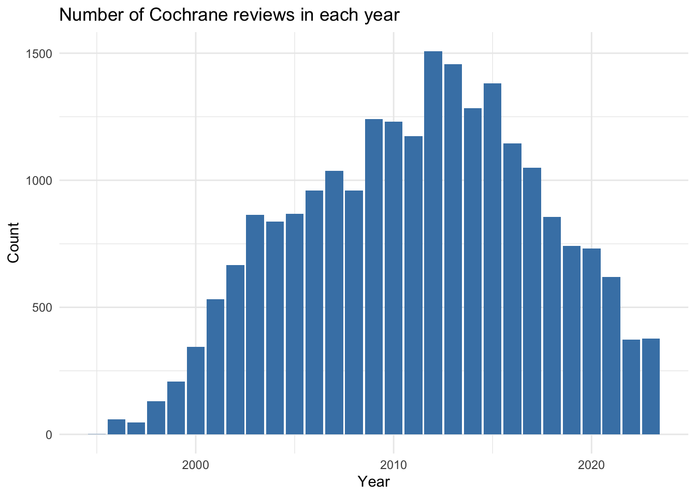
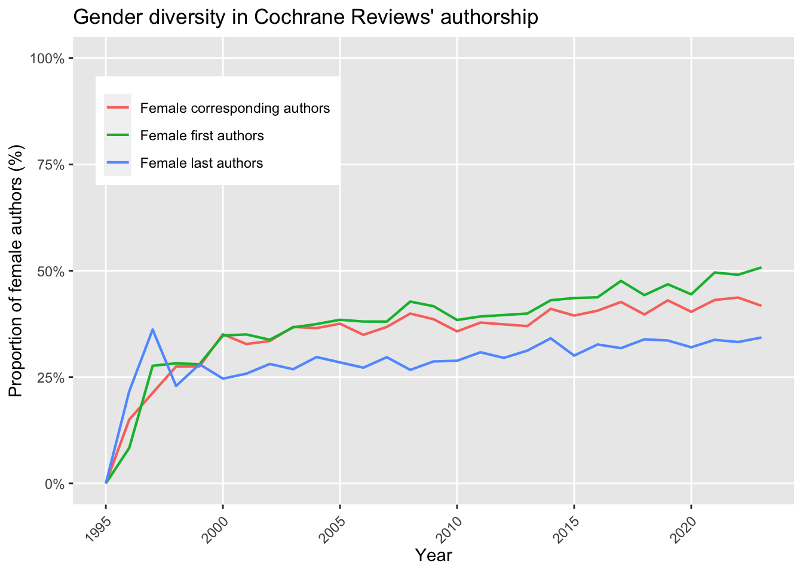
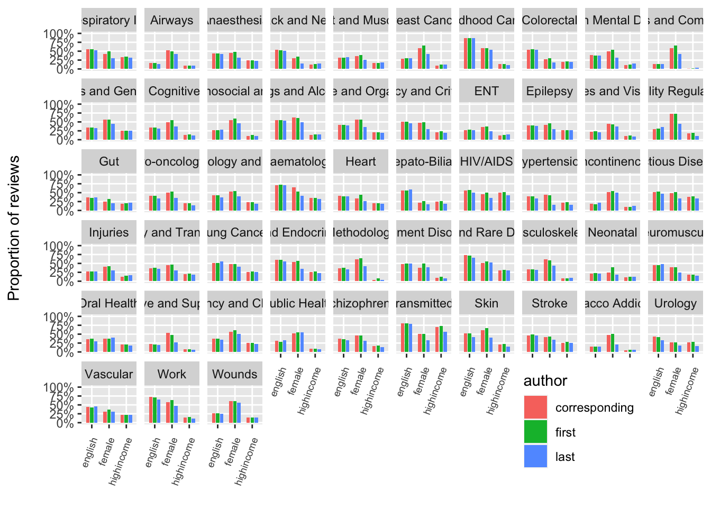

pacman::p_load(knitr,
lubridate,
ggplot2,
dplyr,
tidyr,
stringr,
lme4)Cochrane authors diversity project
Aim
We aimed to determine the level of country, region, language, and gender diversity in Cochrane Reviews’ authorship.
Results
First, loading the needed packages:
And then, loading the datasets:
cochrane = read.csv("data/cochraneauthors_db_final.csv")General characteristics
The number of citations retrieved from the Cochrane Library on November 6, 2023 was 9,153. Adding previous versions of the reviews to the database increased the sample size to 22,681 articles:
nrow(cochrane)[1] 22681The highest number of authors belonged to two reviews with 41 authors by Philipp Schuetz and Sarah Burdett from Acute Respiratory Infections and Lung Cancer Groups:
kable(cochrane[which(is.na(cochrane$aff41) == F), c(2,5,1,6)])| X | type | X.1 | stage | |
|---|---|---|---|---|
| 2955 | 2955 | Intervention | 2955 | Review |
| 4757 | 4757 | Intervention | 4757 | Review |
Now, let’s take a look at the publication years:
cochrane = cochrane %>% mutate(year = year(date))
kable(cochrane %>%
group_by(year) %>%
summarize(count = n()) %>%
mutate(percentage = round(count / sum(count) * 100, 2)))| year | count | percentage |
|---|---|---|
| 1995 | 1 | 0.00 |
| 1996 | 60 | 0.26 |
| 1997 | 47 | 0.21 |
| 1998 | 131 | 0.58 |
| 1999 | 207 | 0.91 |
| 2000 | 345 | 1.52 |
| 2001 | 531 | 2.34 |
| 2002 | 666 | 2.94 |
| 2003 | 864 | 3.81 |
| 2004 | 838 | 3.69 |
| 2005 | 868 | 3.83 |
| 2006 | 959 | 4.23 |
| 2007 | 1038 | 4.58 |
| 2008 | 959 | 4.23 |
| 2009 | 1241 | 5.47 |
| 2010 | 1231 | 5.43 |
| 2011 | 1174 | 5.18 |
| 2012 | 1508 | 6.65 |
| 2013 | 1457 | 6.42 |
| 2014 | 1284 | 5.66 |
| 2015 | 1381 | 6.09 |
| 2016 | 1145 | 5.05 |
| 2017 | 1050 | 4.63 |
| 2018 | 856 | 3.77 |
| 2019 | 741 | 3.27 |
| 2020 | 731 | 3.22 |
| 2021 | 619 | 2.73 |
| 2022 | 373 | 1.64 |
| 2023 | 376 | 1.66 |
It’s always good to have a graphical look as well:
cochrane %>% ggplot() + aes(x = year) +
geom_bar(fill="steelblue") +
labs(title = "Number of Cochrane reviews in each year",
x = "Year",
y = "Count") +
theme(axis.text.x = element_text(angle = 45, vjust = 0.5, hjust=1)) +
theme_minimal()
Review types:
kable(cochrane %>%
group_by(type) %>%
summarize(count = n()) %>%
mutate(percentage = round(count / sum(count) * 100, 2)) %>%
arrange(desc(count)))| type | count | percentage |
|---|---|---|
| Intervention | 21965 | 96.84 |
| Diagnostic | 358 | 1.58 |
| Overview | 140 | 0.62 |
| Methodology | 110 | 0.48 |
| Qualitative | 44 | 0.19 |
| Prognosis | 36 | 0.16 |
| Rapid | 15 | 0.07 |
| Prototype | 13 | 0.06 |
Review stages:
kable(cochrane %>%
group_by(stage) %>%
summarize(count = n()) %>%
mutate(percentage = round(count / sum(count) * 100, 2)) %>%
arrange(desc(count)))| stage | count | percentage |
|---|---|---|
| Review | 15524 | 68.44 |
| Protocol | 7157 | 31.56 |
Let’s see how many article each review group has produced:
kable(cochrane %>%
group_by(group) %>%
summarize(count = n()) %>%
mutate(percentage = round(count / sum(count) * 100, 2)) %>%
arrange(desc(count)))| group | count | percentage |
|---|---|---|
| Cochrane Pregnancy and Childbirth Group | 1634 | 7.20 |
| Cochrane Neonatal Group | 1118 | 4.93 |
| Cochrane Airways Group | 873 | 3.85 |
| Cochrane Pain, Palliative and Supportive Care Group | 785 | 3.46 |
| Cochrane Gynaecology and Fertility Group | 765 | 3.37 |
| Cochrane Cystic Fibrosis and Genetic Disorders Group | 750 | 3.31 |
| Cochrane Eyes and Vision Group | 672 | 2.96 |
| Cochrane Acute Respiratory Infections Group | 629 | 2.77 |
| Cochrane Gut Group | 628 | 2.77 |
| Cochrane Gynaecological, Neuro-oncology and Orphan Cancer Group | 604 | 2.66 |
| Cochrane Oral Health Group | 588 | 2.59 |
| Cochrane Heart Group | 586 | 2.58 |
| Cochrane Hepato-Biliary Group | 580 | 2.56 |
| Cochrane Stroke Group | 577 | 2.54 |
| Cochrane Vascular Group | 563 | 2.48 |
| Cochrane Kidney and Transplant Group | 557 | 2.46 |
| Cochrane Schizophrenia Group | 556 | 2.45 |
| Cochrane Anaesthesia Group | 493 | 2.17 |
| Cochrane Infectious Diseases Group | 484 | 2.13 |
| Cochrane Common Mental Disorders Group | 480 | 2.12 |
| Cochrane Wounds Group | 477 | 2.10 |
| Cochrane Developmental, Psychosocial and Learning Problems Group | 474 | 2.09 |
| Cochrane Musculoskeletal Group | 463 | 2.04 |
| Cochrane Neuromuscular Group | 426 | 1.88 |
| Cochrane Effective Practice and Organisation of Care Group | 423 | 1.86 |
| Cochrane Dementia and Cognitive Improvement Group | 414 | 1.83 |
| Cochrane Bone, Joint and Muscle Trauma Group | 400 | 1.76 |
| Cochrane ENT Group | 385 | 1.70 |
| Cochrane Injuries Group | 371 | 1.64 |
| Cochrane Epilepsy Group | 361 | 1.59 |
| Cochrane Metabolic and Endocrine Disorders Group | 326 | 1.44 |
| Cochrane Colorectal Group | 312 | 1.38 |
| Cochrane Tobacco Addiction Group | 299 | 1.32 |
| Cochrane Skin Group | 298 | 1.31 |
| Cochrane Incontinence Group | 266 | 1.17 |
| Cochrane Drugs and Alcohol Group | 259 | 1.14 |
| Cochrane Fertility Regulation Group | 250 | 1.10 |
| Cochrane HIV/AIDS Group | 231 | 1.02 |
| Cochrane Back and Neck Group | 224 | 0.99 |
| Cochrane Haematology Group | 219 | 0.97 |
| Cochrane Hypertension Group | 211 | 0.93 |
| Cochrane Breast Cancer Group | 208 | 0.92 |
| Cochrane Urology Group | 204 | 0.90 |
| Cochrane Consumers and Communication Group | 182 | 0.80 |
| Cochrane Multiple Sclerosis and Rare Diseases of the CNS Group | 155 | 0.68 |
| Cochrane Movement Disorders Group | 149 | 0.66 |
| Cochrane Emergency and Critical Care Group | 139 | 0.61 |
| Cochrane Public Health Group | 124 | 0.55 |
| Cochrane Childhood Cancer Group | 118 | 0.52 |
| Cochrane Lung Cancer Group | 109 | 0.48 |
| Cochrane Work Group | 108 | 0.48 |
| Cochrane Methodology Group | 104 | 0.46 |
| Cochrane Sexually Transmitted Infections Group | 47 | 0.21 |
| Cochrane ENT GroupCochrane Oral Health Group | 6 | 0.03 |
| Cochrane Infectious Diseases GroupCochrane Haematology Group | 4 | 0.02 |
| Cochrane Back and Neck GroupCochrane Musculoskeletal Group | 3 | 0.01 |
| Cochrane Heart GroupCochrane Stroke Group | 2 | 0.01 |
| Cochrane Methodology GroupCochrane Effective Practice and Organisation of Care Group | 2 | 0.01 |
| Cochrane Common Mental Disorders GroupCochrane Developmental, Psychosocial and Learning Problems Group | 1 | 0.00 |
| Cochrane Gynaecological, Neuro-oncology and Orphan Cancer GroupCochrane Childhood Cancer Group | 1 | 0.00 |
| Cochrane Gynaecological, Neuro-oncology and Orphan Cancer GroupCochrane Haematology Group | 1 | 0.00 |
| Cochrane Gynaecology and Fertility GroupCochrane Incontinence Group | 1 | 0.00 |
| Cochrane Heart GroupCochrane Vascular Group | 1 | 0.00 |
| Cochrane Public Health GroupCochrane Heart Group | 1 | 0.00 |
Geographical diversity
The number of countries detected successfully:
cochrane$first_author_country[cochrane$first_author_country == ""] <- NA
sum(table(cochrane$first_author_country))[1] 22363Gender diversity
Trend
cochrane = cochrane %>% mutate(first_author_female = ifelse(first_author_gender == "F", T, F),
corresponding_author_female = ifelse(corresponding_author_gender == "F", T, F),
last_author_female = ifelse(last_author_gender == "F", T, F))
yearly_trend_gender =
cochrane %>%
select(year,
first_author_female,
corresponding_author_female,
last_author_female) %>%
gather("indicator", "value", -year) %>%
count(year, indicator, value) %>%
mutate(indicator = recode(indicator,
first_author_female = "Female first authors",
corresponding_author_female = "Female corresponding authors",
last_author_female = "Female last authors")) %>%
complete(indicator, value, year, fill = list(n = 0)) %>%
group_by(year, indicator) %>%
mutate(p = n / sum(n)) %>%
filter(value) %>%
ungroup()
plot_trend_gender =
yearly_trend_gender %>%
ggplot() +
aes(x = year,
y = p,
group = indicator,
color = indicator) +
geom_line(size = 0.75) +
scale_y_continuous(limits = c(0, 1),
labels = scales::percent) +
scale_color_discrete(name = NULL) +
scale_fill_discrete(breaks = c("Female first authors",
"Female corresponding authors",
"Female last authors")) +
labs( title="Gender diversity in Cochrane Reviews' authorship",
y = "Proportion of female authors (%)",
x = "Year") +
theme(panel.grid.minor = element_blank(),
legend.position = c(0.2, 0.8),
axis.text.x = element_text(angle = 45, vjust = 0.9, hjust=1)
)
#png("figures/plot_trend_region_english.png", width = 10, height = 7, units = "in", res = 800)
plot_trend_gender
# ggsave("figures/Fig5.png", width = 10, height = 7, dpi = 300)
#dev.off()Diversity among review groups
Since some reviews were a collaboration between two review groups, we add a new column and only include those reviews which were from just one review group:
cochrane = cochrane %>%
mutate(group_one = ifelse(str_count(group, "Cochrane") == 1, group, NA))Then,
cochrane = cochrane %>% mutate(first_author_english_F = ifelse(first_author_english == "Yes", F, T),
corresponding_author_english_F = ifelse(corresponding_author_english == "Yes", F, T),
last_author_english_F = ifelse(last_author_english == "Yes", F, T))
summary_table = cochrane %>%
filter(is.na(group_one) == F) %>%
group_by(group_one) %>%
summarise(
first_highincome = mean(first_author_lowincome, na.rm = TRUE),
corresponding_highincome = mean(corresponding_author_lowincome, na.rm = TRUE),
last_highincome = mean(last_author_lowincome, na.rm = TRUE),
first_english = mean(first_author_english_F, na.rm = TRUE),
corresponding_english = mean(corresponding_author_english_F, na.rm = TRUE),
last_english = mean(last_author_english_F, na.rm = TRUE),
first_female = mean(first_author_female, na.rm = TRUE),
corresponding_female = mean(corresponding_author_female, na.rm = TRUE),
last_female = mean(last_author_female, na.rm = TRUE)
) %>%
gather(key, value, -group_one) %>%
separate(key, into = c("author", "indicator"), sep = "_")plot_groups_diversity = summary_table %>%
mutate(group_one = str_replace_all(group_one, c("Cochrane " = "", " Group" = ""))) %>%
ggplot() +
aes(x = indicator,
y = value,
fill = author) +
geom_bar(position = position_dodge(width = 0.7), width = 0.6, stat="identity") +
facet_wrap(~ group_one, ncol = 10) +
scale_y_continuous(limits = c(0, 1),
labels = scales::percent) +
scale_color_discrete(name = NULL) +
labs(y = "Proportion of reviews\n",
x = "") +
theme(panel.grid.minor = element_blank(),
legend.position = c(0.8, 0.01),
axis.text.x = element_text(angle = 70, vjust = 0.9, hjust=1, size = 7))
plot_groups_diversity
# ggsave("figures/Appendix_Fig.png", width = 20, height = 12, dpi = 300)Fisher exact test for first author:
fisher.test(table(cochrane$group_one, cochrane$first_author_lowincome), simulate.p.value = T)
Fisher's Exact Test for Count Data with simulated p-value (based on
2000 replicates)
data: table(cochrane$group_one, cochrane$first_author_lowincome)
p-value = 0.0004998
alternative hypothesis: two.sidedfisher.test(table(cochrane$group_one, cochrane$first_author_english), simulate.p.value = T)
Fisher's Exact Test for Count Data with simulated p-value (based on
2000 replicates)
data: table(cochrane$group_one, cochrane$first_author_english)
p-value = 0.0004998
alternative hypothesis: two.sidedfisher.test(table(cochrane$group_one, cochrane$first_author_female), simulate.p.value = T)
Fisher's Exact Test for Count Data with simulated p-value (based on
2000 replicates)
data: table(cochrane$group_one, cochrane$first_author_female)
p-value = 0.0004998
alternative hypothesis: two.sidedFisher exact test for corresponding author:
fisher.test(table(cochrane$group_one, cochrane$corresponding_author_lowincome), simulate.p.value = T)
Fisher's Exact Test for Count Data with simulated p-value (based on
2000 replicates)
data: table(cochrane$group_one, cochrane$corresponding_author_lowincome)
p-value = 0.0004998
alternative hypothesis: two.sidedfisher.test(table(cochrane$group_one, cochrane$corresponding_author_english), simulate.p.value = T)
Fisher's Exact Test for Count Data with simulated p-value (based on
2000 replicates)
data: table(cochrane$group_one, cochrane$corresponding_author_english)
p-value = 0.0004998
alternative hypothesis: two.sidedfisher.test(table(cochrane$group_one, cochrane$corresponding_author_female), simulate.p.value = T)
Fisher's Exact Test for Count Data with simulated p-value (based on
2000 replicates)
data: table(cochrane$group_one, cochrane$corresponding_author_female)
p-value = 0.0004998
alternative hypothesis: two.sidedFisher exact test for last author:
fisher.test(table(cochrane$group_one, cochrane$last_author_lowincome), simulate.p.value = T)
Fisher's Exact Test for Count Data with simulated p-value (based on
2000 replicates)
data: table(cochrane$group_one, cochrane$last_author_lowincome)
p-value = 0.0004998
alternative hypothesis: two.sidedfisher.test(table(cochrane$group_one, cochrane$last_author_english), simulate.p.value = T)
Fisher's Exact Test for Count Data with simulated p-value (based on
2000 replicates)
data: table(cochrane$group_one, cochrane$last_author_english)
p-value = 0.0004998
alternative hypothesis: two.sidedfisher.test(table(cochrane$group_one, cochrane$last_author_female), simulate.p.value = T)
Fisher's Exact Test for Count Data with simulated p-value (based on
2000 replicates)
data: table(cochrane$group_one, cochrane$last_author_female)
p-value = 0.0004998
alternative hypothesis: two.sidedGLMM:
#female_first = glmer(first_author_female ~ (1 | year), data = cochrane, family = binomial)
#summary(female_first)